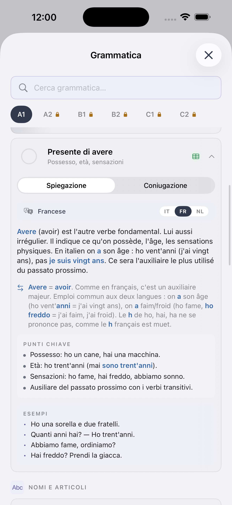
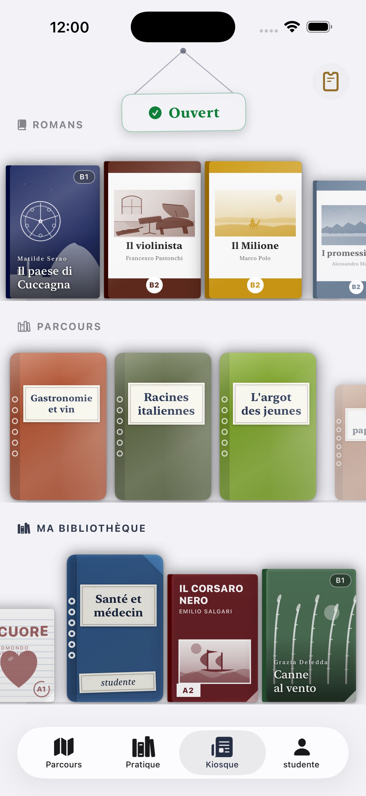
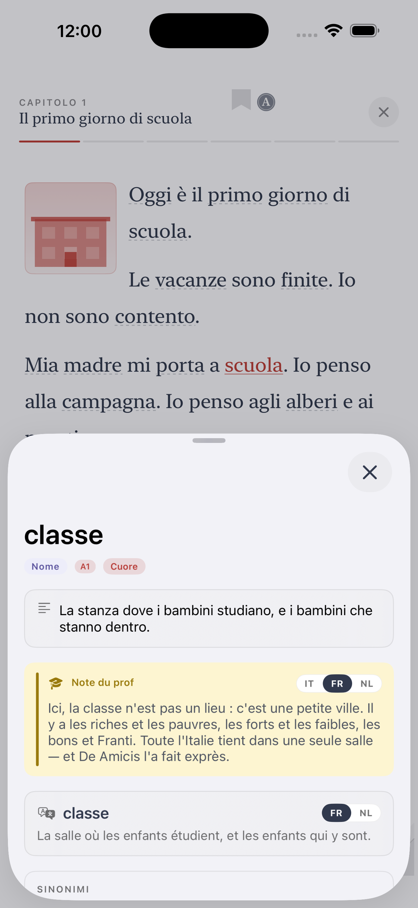
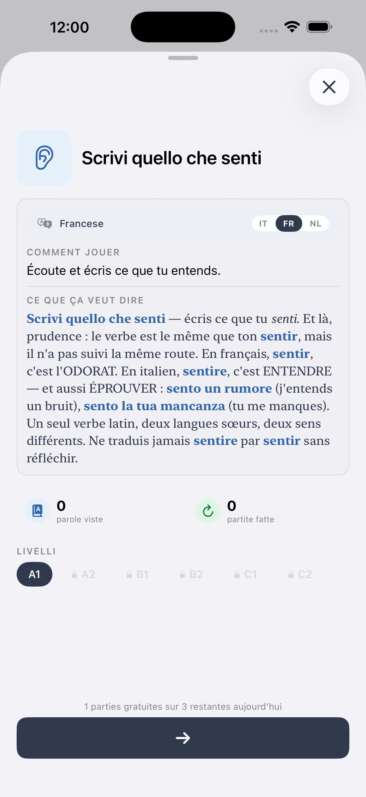

Je t'aime, je t'apprends.
Le test d'italien pour la citoyenneté, expliqué.
Si vous demandez la citoyenneté italienne, vous devez prouver l'italien au niveau CECR A2. Voici à quoi ressemble le test et comment vraiment le préparer.
Ce qu'est vraiment le test
Depuis 2018, les demandeurs de citoyenneté italienne (par résidence ou mariage) doivent prouver l'italien au niveau CECR A2. Vous pouvez le faire avec un certificat de l'un des quatre organismes officiels :
- CILS A2 (Università per Stranieri di Siena) — le plus courant.
- CELI A2 (Università per Stranieri di Perugia).
- PLIDA A2 (Società Dante Alighieri).
- Roma Tre A2.
Les quatre sont légalement équivalents. Sessions plusieurs fois par an, certificat sans date d'expiration.
Ce que A2 signifie concrètement
A2, ce n'est pas la fluidité. C'est à peu près "survivre au quotidien en Italie sans avoir besoin de l'anglais". Vous devez pouvoir :
- Vous présenter, parler de votre famille et de votre travail.
- Raconter votre journée, votre logement, votre quartier.
- Lire des panneaux, avis, formulaires et articles courts.
- Remplir un formulaire avec des données personnelles.
- Écrire un message court (10–15 lignes) sur un sujet familier.
- Comprendre une conversation lente et claire sur des sujets du quotidien.
Structure du CILS A2
Le CILS A2 a quatre sections :
- Ascolto (écoute) — 2 audios, 30 min.
- Comprensione della lettura (lecture) — 2 textes courts, 30 min.
- Analisi delle strutture di comunicazione (grammaire) — texte à trous, 30 min.
- Produzione scritta (écriture) — 2 courts textes (30–50 mots), 30 min.
- Produzione orale (oral) — entretien court, ~5 min.
Il faut passer chaque section pour passer l'examen.
Comment le préparer
La plupart des gens ont besoin de 3 à 6 mois de pratique régulière pour aller de zéro à A2. Ce qui marche :
- Sessions courtes quotidiennes — 20 à 40 min par jour valent mieux qu'une longue séance par semaine.
- Les quatre compétences — lire, écouter, écrire, parler. Beaucoup oublient l'écriture et l'oral, qui sont la moitié de l'examen.
- Vocabulaire par thème — famille, travail, maison, santé, courses, voyage. Ils reviennent partout.
- Écoutez de l'italien réel — radio, podcasts, YouTube. Coffee Break Italian marche bien.
- Simulez l'examen — le site du CILS a des annales. Faites au moins trois simulations.
Ti a un parcours A2 dédié
Chaque étape A2 de Ti est mappée sur le vocabulaire et la grammaire du CILS/CELI. Gratuit au démarrage.
Essayer Ti sur iOS →Logistique
- Coût : 80–130 € selon organisme et centre.
- Où : centres officiels dans chaque grande ville italienne, et consulats à l'étranger.
- Inscription : directement sur le site de l'organisme (cils.unistrasi.it, cvcl.it, ladante.it, uniroma3.it).
- Résultat : en 8–10 semaines. Certificat à envoyer à la Prefettura pour le dossier de citoyenneté.
Questions courantes
Faut-il le test si on est marié(e) à un(e) Italien(ne) ?
Oui. L'exigence A2 s'applique à la citoyenneté par résidence comme par mariage.
Que se passe-t-il si je rate une section ?
Il faut refaire tout le test. D'où l'importance des quatre compétences.
Un certificat d'italien d'un autre pays est-il valable ?
Oui, s'il vient d'un des quatre organismes officiels (CILS, CELI, PLIDA, Roma Tre).
Préparez le A2 avec Ti
Parcours A2 structuré, exercices type examen, dictionnaire en français.
See Ti in action
The CEFR path, exercises, edicola and graded Italian classics — from A1 to C2, in 14 languages.





